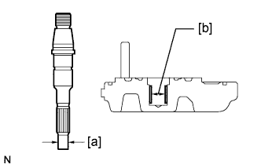
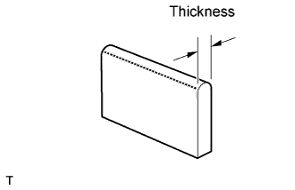
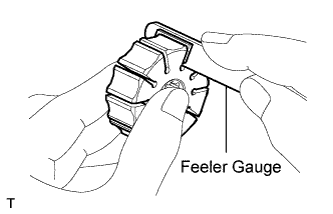
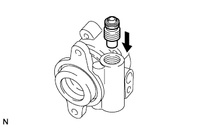
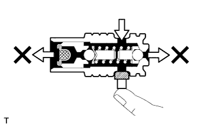
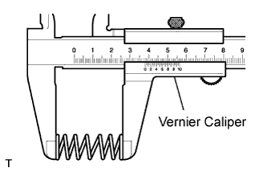

1VD-FTV VANE PUMP > INSPECTION |
| 1. CHECK OIL CLEARANCE BETWEEN VANE PUMP SHAFT AND VANE PUMP REAR HOUSING BUSHING |
 |
Using a micrometer, measure the outer diameter [a] of the shaft.
Using a vernier caliper, measure the inner diameter [b] of the rear housing bush.
Calculate the oil clearance.
Oil clearance = Inner diameter of the bush [b] - Outer diameter of the shaft [a]
| 2. INSPECT VANE PUMP ROTOR AND VANE PUMP PLATES |
 |
Using a micrometer, measure the thickness of the 10 vane pump plates.
 |
Using a feeler gauge, measure the clearance between the side face of the rotor groove and the plate.
| 3. INSPECT FLOW CONTROL VALVE |
 |
Coat the flow control valve with power steering fluid and check that it falls smoothly into the valve hole by its own weight.
If the control valve does not fall into the hole smoothly, replace the vane pump assembly.
 |
Check the flow control valve for leakage.
Close one of the holes and apply 390 to 490 kPa (4.0 to 5.0 kgf/cm2, 57 to 71 psi) of compressed air into the opposite side hole, and confirm that air does not come out from the end holes.
If air leaks, replace the vane pump assembly.
| 4. INSPECT FLOW CONTROL VALVE COMPRESSION SPRING |
 |
Using a vernier caliper, measure the free length of the compression spring.
| 5. INSPECT PRESSURE PORT UNION |
Visually check the pressure port union for fluid leaks.
If there is a leak, replace the vane pump assembly.